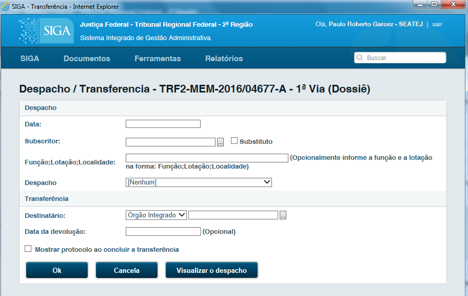
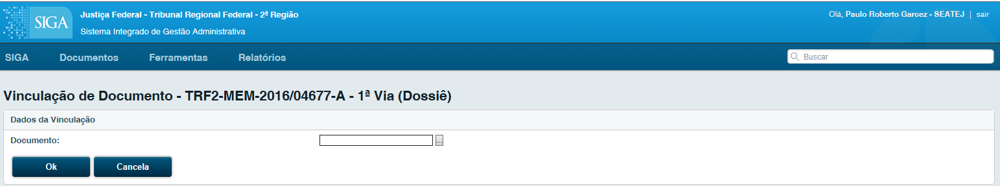

Movimentando um Documento¶
Guia da Via e Geral, na guia referente à Via e Geral o usuário obtém a visão geral do estado de cada um dos documentos e os recursos disponíveis para avaliar, complementar informações, movimentar ou arquivar o documento

Anexar Arquivo¶
Anexa um arquivo, sempre no formato PDF, ao documento em questão.
Para gerar um arquivo em PDF, realize uma impressão selecionando a impressora “CUT PDF Writer” ao selecioná-la o sistema solicitará um diretório para gravar o novo PDF gerado.
Arq. Corrente¶
(opção válida para documentos “em andamento”); Arquiva o documento em questão, que poderá ser localizado no Quadro de Expedientes na página inicial.

Despachar e Transferir¶
No despacho é permitido ao usuário criar outro tipo de documento, selecionando a opção “Texto Longo”.

O sistema carregará a tela de criação de um novo documento (imagem 14), que apresentará a opção Tipo, já preenchida como Despacho, possibilitando ao usuário criar este novo documento.
Na imagem 25, acima, consta a visualização da opção de um despacho Outros do tipo Texto Longo para o documento TRF2-MEM-2016/04677.
Após realizar todo o procedimento normal de criação deste despacho (imagem 14) e acessar a opção Registrar Assinatura manual, conforme a tela de Detalhes do Documento (imagem 4), o sistema, automaticamente, “realiza uma Juntada” ao documento inicialmente despachado.
Duplicar¶
Cria uma cópia, sempre com o status “temporário”, com todos os campos já preenchidos com os dados do documento duplicado. O documento Original não é modificado.
Editar¶
Volta para tela de edição do documento. Apenas Documentos temporários e documentos eletrônicos “pendentes de assinatura” poderão ser editados.
Excluir¶
Exclui o documento em questão. Apenas documentos temporários poderão ser excluídos.
Exibir informações completas¶
Exibe todas as informações ocultas de um documento, como: Guia Geral, Outras Vias se houver, todas as Exclusões e outras Movimentações, etc.
Fazer anotação¶
Anexa um pequeno texto, observação, ao documento em questão. O texto será exibido ao final de uma coluna.
Finalizar¶
Finaliza um documento temporário. Após o documento ser finalizado é gerado um número definitivo e nenhum documento físico poderá mais ser editado, documentos eletrônicos poderão ser editados desde que ainda não assinados. Apenas documentos temporários poderão ser finalizados.
Incluir Cossignatário¶
Inclui um segundo subscritor, ou mais de um, ao documento em questão. O(s) cossignatário(s) aparecerá(ão) ao final do documento, junto ao subscritor principal. Apenas documentos temporários poderão ser sofrer a inclusão de cossignatários.
Juntar¶

Ao selecionar esta opção, o sistema apresentará a tela acima. Na opção Documento Interno é possível selecionar todos os documentos que estão com status Em andamento que são possíveis de ter um documento juntado a ele. Apenas será possível juntar documentos que estejam na mesma lotação. Ex.: Caso a lotação de origem do usuário logado no sistema seja Presidência, ao selecionar esta opção, serão apresentados todos os documentos da Presidência com o status Em Andamento, que poderão ter um documento juntado a ele.

Na imagem acima, o documento capturado TRF2-CAP-2016/00002 foi juntado ao documento T2-MEM-2016/04677, neste caso, o documento capturado foi incorporado ao memorando, e acompanhará todas as movimentações ocorridas no mesmo.
- A juntada ocorre também nos despachos “Textos Longos” após estes receberem o Registro de Assinatura Manual.
- Após um documento ser juntado a outro, automaticamente este passa a ser movimentado a partir do documento ao qual foi juntado, que passa a ser considerado o documento principal.
- Apenas documento “Aguardando Andamento” poderão ser juntados.
Redefinir Nível de Acesso¶
Limita o acesso do documento ao usuário/órgão/lotação desejado.
Vincular¶
Quando é necessário fazer uma referência a outro documento dentro do SIGA, esta opção é a mais adequada. Diferente de Juntar, Vincular apenas disponibiliza um link para acesso a outro documento. Após serem vinculadas, todas as opções continuam ativas (Despachar/Transferir, Anexar, Arq. Corrente etc.).
A Vinculação é apresentada como um link, ex: Ver Também TRF2-OFI-2017/99999
Visualizar Dossiê¶
Visualiza todos os arquivos deste documento. Esta opção permite que sejam impressos todos os despachos, anexos e todos os documentos integrantes deste documento principal.
Visualizar Impressão¶
Visualiza como realmente o documento será impresso. Nesta, há a opção de imprimir o documento.
Enquanto o documento não for finalizado e estiver com número temporário, aparecerá uma tarja de “Rascunho” em marca d’água. Documentos digitais perderão a tarja de rascunho apenas quando registrada a assinatura digital.